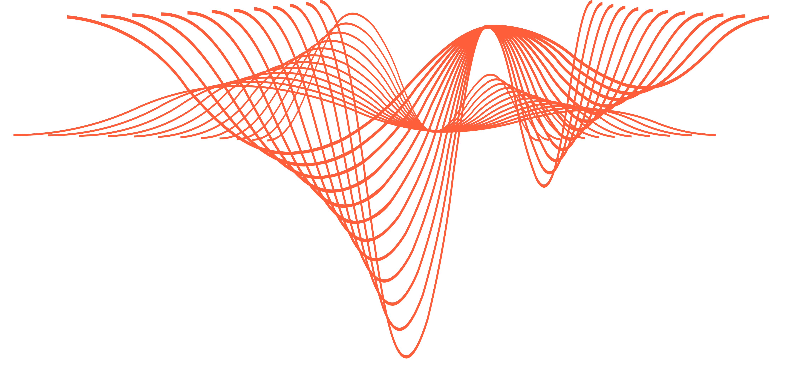

HDZCO

Consultancy in the modern digital era requires a comprehensive understanding of the key components of your business while leveraging the most recent technological advancements to maximize value creation. HDZCO is the business name of my independent consulting enterprise which intends to derive actionable data insights by proposing, managing and implementing a custom data strategy for your business needs.
Consulting Services
[add description]
About me
[add photo]
I’ve been passionate about the technology industry since the beginning of my professional career. My areas of specialization revolve around Big Data and Artificial Intelligence. Due to my academic background, I’ve strong domain knowledge in financial engineering, statistics, and mathematics.
Work Experience
- 2018.03 - current Consultant - Big Data Engineer at Intersys Consulting
- [add description]
- 2017.02 - 2018.03 Data Scientist Jr at Crabi
- [add description]
- 2016.10 - 2017.02 Data Science Intern at Crabi
- I began my internship at Crabi while it was an early-stage startup in R&D. My responsibilities were:
- Data analytics of IoT devices used to track test-users.
- Proof-of-concept end-to-end solution from data acquisition to user data visualization.
- Proof-of-concept of insurance risk model using neural networks.
- Proof-of-concept chatbot at FB-Messenger platform.
- Automated business requirements with Python and R
- I began my internship at Crabi while it was an early-stage startup in R&D. My responsibilities were:
Academic Background
- 2013 - 2017 Bachelor Degree in Financial Engineering- Western Institute of Technology and Higher Education.
- Member of the student union (AFIN - SAIFI) and academic council of Financial Engineering. Graduated as an outstanding student (top-tier) 98/100.
- International Exchange Program at ESSCA (École supérieure des sciences commercials d’Angers ) in Angers, France. Foreign studies related to economics and business.
If you are interested in knowing more about me, consider downloading my resume. Feel free to contact me on social media (e.g., Twitter, LinkedIn) or reach me by email to talk about technology, open-source projects, conferences or business opportunities.